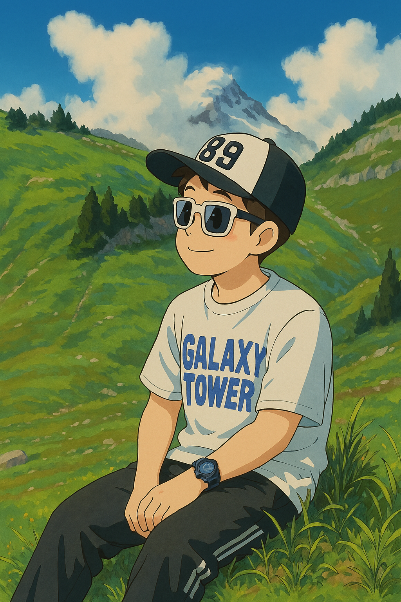
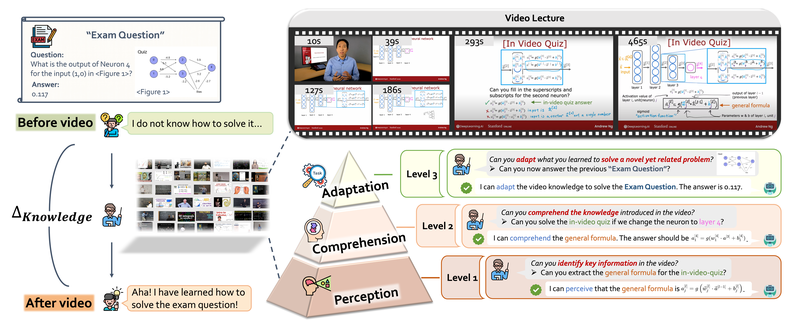
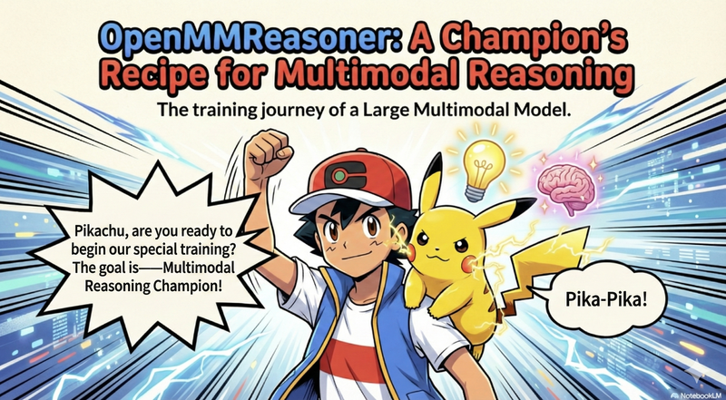

Research AssistantAug. 2024 - Present
S-Lab, Nanyang Technological University
Advised by Prof. Ziwei Liu. Working on agent systems and multimodal foundation models.

Research Assistant @ S-Lab, NTU
I am a Research Assistant at S-Lab, Nanyang Technological University (NTU), Singapore, supervised by Prof. Ziwei Liu. I received my B.Eng. in Computer Science from NTU in 2024 with First Class Honours (Highest Distinction).
My research focuses on Agent Systems (Agent Memory, Agentic RL, RAG) and Foundation Models (Multimodal LLMs, Benchmarking and Evaluation).

A video reasoning benchmark for LMMs, evaluating knowledge acquisition from multi-discipline professional videos. Featured in OpenAI GPT-5 and Google Gemini 3.0 official releases; adopted by Google DeepMind, OpenAI, Alibaba, ByteDance, and others.

A unified evaluation framework supporting 100+ tasks across text, image, video, and audio for 30+ multimodal models. 3.8k+ GitHub stars; widely adopted across the GenAI community for model development and benchmarking.
S-Lab, Nanyang Technological University
Advised by Prof. Ziwei Liu. Working on agent systems and multimodal foundation models.
B.Eng. in Computer Science
First Class Honours (Highest Distinction).